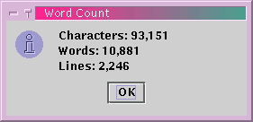
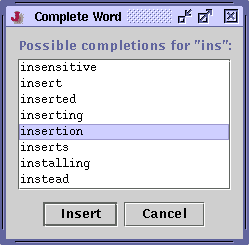

You can move the caret a word at a time by holding down Control in addition to Left or Right. Words can be selected if you hold down Shift in addition to Control.
A single word can be selected by double-clicking with the mouse. If you double-click and then drag, the resulting selection will always begin and end on word boundaries. Because mouse clicks cannot be recorded in macros, you can use the Edit>Selection>Select Word command (keyboard equivalent: Control-E W) to select the word the caret is positioned on when recording a macro.
Pressing Control in addition to Backspace or Delete deletes the word before and after the caret, respectively.
Edit>Word Count displays a dialog box with the number of characters, words and lines in the current buffer.
Figure 4-3. The word count dialog box

Edit>Complete Word (keyboard equivalent: Control-B) searches the current buffer for possible completions of the current word. If multiple completions were found, they will be listed in a dialog box. If there is only one completion it will be inserted into the buffer immediately. This feature be used to enter previously typed long identifiers in program source, for example.
Figure 4-4. The Complete Word dialog box
